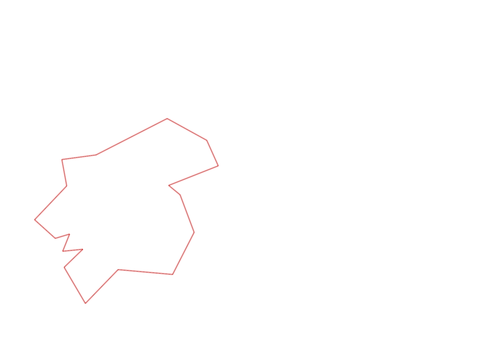
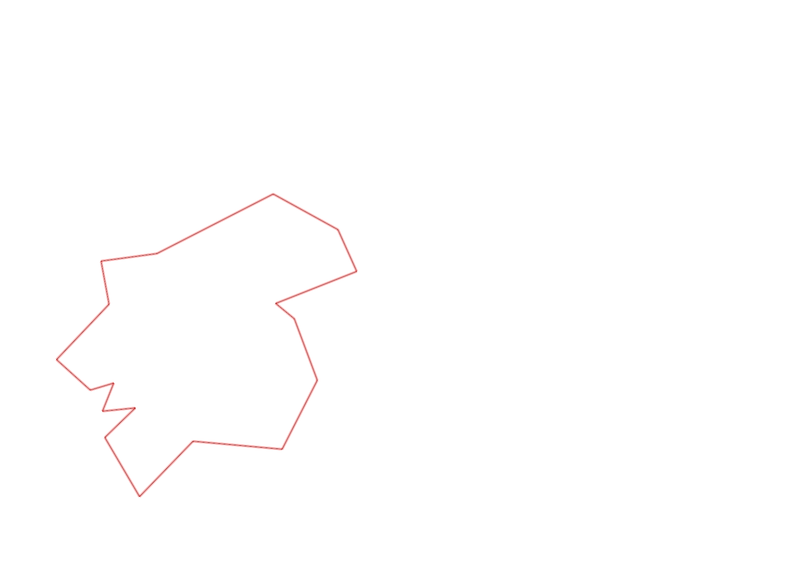

| Control |
Points |
Time Punched |
Distance |
Your Time |
Pace |
Place |
Fastest Time |
Median Time |
% Behind Fastest |
| 127 |
20 |
|
0.06 |
0:00:47 |
13:03 |
22 / 30 |
0:00:01 |
0:00:32 |
4600% |
| 42 |
40 |
|
0.17 |
0:02:18 |
13:31 |
18 / 20 |
0:01:06 |
0:01:52 |
109% |
| 61 |
60 |
|
0.21 |
0:04:36 |
21:54 |
18 / 20 |
0:02:20 |
0:03:34 |
97% |
| 59 |
50 |
|
0.24 |
0:03:06 |
12:55 |
15 / 19 |
0:01:47 |
0:02:30 |
73% |
| 77 |
70 |
|
0.21 |
0:02:54 |
13:48 |
13 / 17 |
0:01:25 |
0:02:33 |
104% |
| 40 |
40 |
|
0.18 |
0:02:52 |
15:55 |
14 / 18 |
0:01:16 |
0:02:38 |
126% |
| 41 |
40 |
|
0.11 |
0:01:47 |
16:12 |
16 / 20 |
0:00:28 |
0:01:07 |
282% |
| 71 |
70 |
|
0.09 |
0:01:07 |
12:24 |
3 / 12 |
0:00:33 |
0:01:12 |
103% |
| 54 |
50 |
|
0.08 |
0:01:01 |
12:42 |
29 / 33 |
0:00:27 |
0:00:45 |
125% |
| 69 |
60 |
|
0.07 |
0:02:47 |
39:45 |
16 / 20 |
0:01:00 |
0:01:56 |
178% |
| 53 |
50 |
|
0.12 |
0:01:58 |
16:23 |
18 / 26 |
0:01:16 |
0:01:51 |
55% |
| 44 |
40 |
|
0.2 |
0:01:32 |
07:40 |
9 / 22 |
0:00:39 |
0:01:40 |
135% |
| 32 |
30 |
|
0.12 |
0:01:21 |
11:15 |
12 / 22 |
0:00:43 |
0:01:19 |
88% |
| 63 |
60 |
|
0.15 |
0:01:52 |
12:26 |
19 / 25 |
0:01:05 |
0:01:29 |
72% |
| 107 |
100 |
|
0.35 |
0:04:27 |
12:42 |
16 / 22 |
0:02:14 |
0:03:49 |
99% |
| 57 |
50 |
|
0.2 |
0:07:14 |
36:10 |
21 / 22 |
0:01:54 |
0:03:53 |
280% |
| 92 |
90 |
|
0.12 |
0:03:51 |
32:05 |
8 / 18 |
0:02:10 |
0:04:22 |
77% |
| Finish |
0 |
|
0.23 |
0:09:17 |
40:21 |
5 / 6 |
0:01:41 |
0:05:45 |
451% |
Total Distance Covered: 2.91km
Points Scored: 920
Late Penalty: 0
Final Score: 920
Total Time: 0hours 54minutes 47seconds
Efficiency: 316.15 points/km
 
